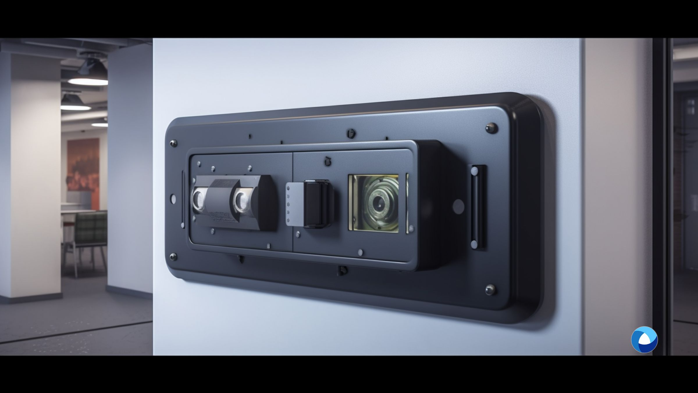

How Does Iris Recognition Work

Introduction
A brief explanation of iris recognition technology and its significance
Iris recognition technology is a cutting-edge biometric identification system that utilizes the unique patterns present in the iris of an individual's eye for identification purposes. The iris, which is the coloured portion of the eye, contains intricate and highly distinctive patterns that are unique to each person, much like a fingerprint. This uniqueness makes the technology a powerful tool for accurate and reliable identification in various applications, ranging from security and access control to border and immigration control and national identity management.
The significance of this technology lies in its ability to provide a highly secure and efficient means of identification. Unlike traditional identification methods such as passwords or ID cards, which can be lost, stolen, or easily replicated, the iris pattern is an inherent and unalterable characteristic of an individual. This makes it extremely difficult for impostors to deceive the system, enhancing security measures in various sectors.
Thesis statement
In this article, we delve into the intricate workings of iris recognition, shedding light on how they function and the underlying technologies that make them possible. We will examine the accuracy of biometric authentication and explore the factors that can affect its performance, such as environmental conditions and ocular abnormalities. Additionally, we will discuss the vulnerabilities associated with this technology, including potential risks of spoofing or presentation attacks.
Furthermore, we will provide insights into the process of iris identification, outlining the key steps involved in capturing and extracting iris features digital photographs, matching them against a database, and generating a unique identifier for each individual. We will also discuss the importance of data privacy and the measures taken to ensure the security and confidentiality of iris biometric information.
By delving into these aspects, this article aims to provide a comprehensive understanding of the technology, enabling readers to grasp its capabilities, limitations, and potential applications.
Understanding Iris Recognition
Definition and explanation of iris recognition
Iris recognition refers to the automated process of identifying individuals based on the unique patterns present in their iris, which is the coloured portion of the human eye surrounding the pupil. This biometric identification technique has gained significant attention and adoption due to the high degree of accuracy and security it offers. By analyzing the intricate patterns within the iris, the technology can distinguish one person from another with a remarkable level of reliability.
To comprehend the mechanics of iris recognition fully, it is essential to familiarize oneself with key terms associated with this technology. Iris or iris recognition works, often referred to as iris scanning, is a form of biometric identification that utilizes the unique features found in the iris for authentication purposes. Iris scanning technology encompasses the hardware and software components employed to capture and process iris images, enabling the iris recognition works system to identify individuals accurately. Iris recognition, equipped with iris scanners, implement iris scanning in various applications, ranging from security systems to time and attendance tracking. Biometric authentication refers to the process of using an individual's biological characteristics, such as the iris, to verify their identity.

How does the iris recognition system work?
Explanation of iris scanning process
The iris scanning process begins with the capture of an individual's iris image using a specialized iris scanner. The iris scanner uses near-infrared light to illuminate the person's iris and capture high-resolution images that reveal the unique patterns within. Unlike other biometric identification methods, an iris scanner does not require physical contact, making it a non-intrusive and hygienic solution.
Use of iris scanners and iris scanning technology
Iris scanners employ advanced technologies, mobile devices such as high-resolution cameras and infrared illumination, to capture detailed images of the iris. The near-infrared light is particularly useful as it can penetrate the outer layers of the eye, capturing clear images of intricate iris patterns that are not visible to the naked eye.
Creation of biometric templates from an iris image
Once the person's iris image is captured, the iris recognition system extracts the unique features and characteristics, such as furrows, ridges, and freckles, from the iris patterns. These extracted features are then converted into a mathematical representation called a biometric template. That template serves as a digital representation of the unique pattern of the individual's iris, ensuring the privacy and security of their personal information.
Comparison of iris patterns for identification
During the identification process, the captured image is compared against a database containing pre-registered templates of known individuals. The iris recognition system utilizes complex algorithms to analyze the similarities and differences between the templates, determining the level of match or mismatch. If a suitable match is found, the face recognition system confirms the identity of the individual.
Understanding the intricate workings of iris recognition, from the iris scanning process to the creation and comparison of biometric templates, is crucial in comprehending the capabilities and limitations of this technology. By harnessing the unique patterns within the human iris, iris recognition offers a highly accurate and secure method of biometric authentication, making it an invaluable tool in various domains where identity verification is paramount.
Iris Recognition Accuracy
Importance of accuracy in biometric technologies
Accuracy is a critical factor in the success and widespread adoption of biometric technologies. In the realm of iris recognition, accuracy refers to the system's ability to correctly match an individual's iris pattern to their stored template with a high degree of precision. The reliability of iris recognition relies on their capability to distinguish between different individuals accurately, ensuring secure and error-free identification.
To grasp the concept of retina recognition and its accuracy fully, it is essential to familiarize oneself with relevant terms. Iris recognition accuracy pertains to the system's ability to precisely identify individuals based on their unique iris patterns.
Biometric technology refers to the field encompassing various identification methods utilizing biological characteristics. Unique patterns in the iris, such as furrows and ridges, are crucial for the most accurate forms of biometric identification. Additionally, infrared light plays a significant role in capturing high-quality iris images, as it can penetrate the outer layers of the eye, revealing the intricate iris details.
Addressing the accuracy of iris recognition
Role of invisible infrared light in capturing high-quality iris images
Infrared light is vital in iris recognition as it enables the capture of high-quality iris images. By using near-infrared illumination, the iris scanner can bypass obstacles like the cornea and capture a clear image of the iris. This invisible light source reveals the unique patterns present in the iris, including the crypts and filaments that are crucial for accurate identification. The use of infrared and visible light also ensures that the captured images contain sufficient detail for precise comparison and analysis.
Advantages of iris recognition over other biometric technologies
Compared to other biometric technologies, iris recognition offers distinct advantages in terms of accuracy. The iris patterns are highly unique and stable throughout an individual's lifetime, making them less susceptible to changes caused by ageing or external factors.
Additionally, iris recognition systems can capture iris images from a distance, eliminating the need for physical or contact lenses, which enhances user convenience and hygiene. These factors contribute to the high accuracy rates achieved by iris recognition.
Case studies showcasing the accuracy of iris recognition in various applications
Numerous case studies have demonstrated the impressive accuracy of iris recognition in real-world applications. For instance, in border control, iris recognition has been successfully deployed to identify individuals with exceptional accuracy, ensuring the integrity of national borders.
Similarly, iris recognition has been utilized in access control systems for secure entry into restricted areas, providing reliable identification even in challenging environmental conditions. These case studies highlight the consistent and extremely reliable performance of iris recognition.
Understanding the accuracy of iris recognition is crucial for recognizing their strengths and limitations. With its reliance on unique iris patterns and the use of infrared light for precise image capture, iris recognition offers exceptional accuracy rates in biometric identification. This technology's advantages over other biometric fingerprint recognition methods and the numerous successful case studies further emphasize its reliability in various applications, making it an invaluable tool in the field of secure identification.
Vulnerabilities and Limitations
To explore the vulnerabilities and limitations of iris recognition, it is important to understand the relevant key terms. The iris recognition market refers to the industry and commercial applications related to the technology. Summary iris recognition encompasses the process of extracting and creating a condensed representation of an individual's iris for identification purposes. Iris scans involve the capture and analysis of iris images. Iris scans are conducted with the devices used to capture these images. Lastly, biometric data refers to the unique biological characteristics used in identification systems, such as the iris patterns in the case of iris recognition.
Can iris recognition be fooled?
Potential vulnerabilities and challenges in iris recognition
While iris recognition technology is highly reliable, it is not without vulnerabilities and challenges. One potential vulnerability lies in the possibility of capturing low-quality iris scans due to factors such as poor image resolution or occlusion of the iris. These factors can affect the accuracy of the identification process. Moreover, certain ocular abnormalities or eye conditions may pose challenges to accurate iris recognition, as they can alter the unique iris patterns that are used for identification.
Techniques used to circumvent iris recognition
Despite its robustness, iris recognition can be subject to attempts at circumvention. Techniques such as spoofing or presentation attacks involve the use of counterfeit or manipulated iris images to deceive the system. For example, high-resolution printed images or contact lenses designed to mimic the appearance of real irises can potentially fool iris recognition systems. However, it is important to note that these techniques typically require a high level of sophistication and are less common compared to other forms of biometric spoofing.
Countermeasures and advancements in iris recognition
To address these vulnerabilities, ongoing advancements and countermeasures have been developed in the field of iris recognition. This includes the implementation of liveness detection techniques, which aim to detect and prevent presentation attacks by verifying the presence of a live eye during the iris scanning process. Additionally, multi-factor authentication systems that combine iris recognition with other biometric modalities, such as fingerprint scans or facial recognition, can further enhance the security and accuracy of identification.
Continued research and development efforts are focused on improving the resilience of iris recognition against potential vulnerabilities and challenges. By incorporating advanced algorithms, robust liveness detection mechanisms, and multi-modal biometric fusion, the reliability and effectiveness of iris recognition are continuously being strengthened.
Understanding the vulnerabilities and limitations of iris recognition is essential for implementing appropriate security measures and ensuring the integrity of biometric data. While certain vulnerabilities exist, ongoing advancements in technology and the adoption of countermeasures are continuously mitigating these risks and enhancing the overall reliability and security of iris recognition devices.
The Process of Iris Recognition Identification
To understand the process of iris recognition identification, it is essential to be familiar with the relevant key terms. An iris system refers to the hardware and software components that enable iris recognition. Iris biometrics pertains to the use of iris patterns as unique biological identifiers for identification purposes.
Iris patterns are the intricate and distinctive features found within the iris of an individual's eye. Iris images are the captured visual representations of the iris patterns. Iris analysis involves the extraction and comparison of iris features. A computer database is where the iris image compression biometric templates and associated information are securely stored.
Explaining the identification process
Enrollment and creation of biometric templates
The process begins with the enrollment phase, where an individual's iris is scanned using an iris system. The captured iris image is analyzed, and unique iris patterns are extracted from high-quality images.
The biometric templates, along with any associated information, are securely stored in a computer database. This database acts as a repository for iris data, enabling efficient retrieval and comparison during the identification process. The stored iris code data is protected using robust security measures to ensure the privacy and integrity of the biometric information.
Matching and verification process for positive identification
During the identification phase, a new iris scan image is captured and analyzed. The iris system compares the extracted features of the new iris scan image with the stored biometric templates in the database.
By utilizing sophisticated algorithms, the system performs a comparison to determine the level of similarity or dissimilarity between the captured iris and the stored templates. If a match is found above a predetermined threshold, the individual's identity is verified.
Conclusion
Recap of the significance of iris recognition
In conclusion, iris recognition holds significant importance in the field of biometrics identification. Looking ahead, the future of this technology holds promising potential. Ongoing advancements in hardware and software are continually improving the accuracy, speed, and reliability of iris recognition.
Additionally, the integration of iris recognition with other biometric modalities, such as facial recognition or fingerprint scanning, can further enhance the security and effectiveness of identification processes. The potential applications of iris recognition technology extend beyond traditional security systems and may encompass areas such as healthcare, banking, and personalized services, where secure and convenient identification is paramount.